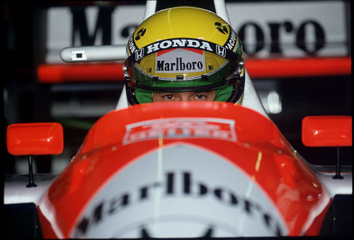

Ayrton Senna
Ayrton Senna da Silva nasceu em São Paulo, no dia 21 de março de 1960. Aos 4 anos de idade já demonstrava habilidade com o Kart e aos 13 anos já competia oficialmente. Em 1981, Senna começou a competir na Europa, onde ganhou o campeonato inglês de Fórmula Ford 1600 com uma marca de 12 vitórias em 20 corridas.
Vitórias
Senna tem 41 vitórias em 161 Grandes Prêmios, no total, 35 dessas 41 vitórias foram com a McLaren, e 32 de suas vitórias foram em carros com motor Honda.
Ayrton Senna é recordista de vitórias em Mônaco
Senna venceu em 1987, pela Lotus, e depois teve cinco vitórias consecutivas pela McLaren, entre 1989 e 1993. Em 1984, pela Toleman, vinha em segundo lugar e tinha chances de tomar a liderança do francês Alain Prost, mas a prova acabou interrompida devido às chuvas. Em outras duas oportunidades, 1985 e 1988, Senna liderou a prova até abandonar.